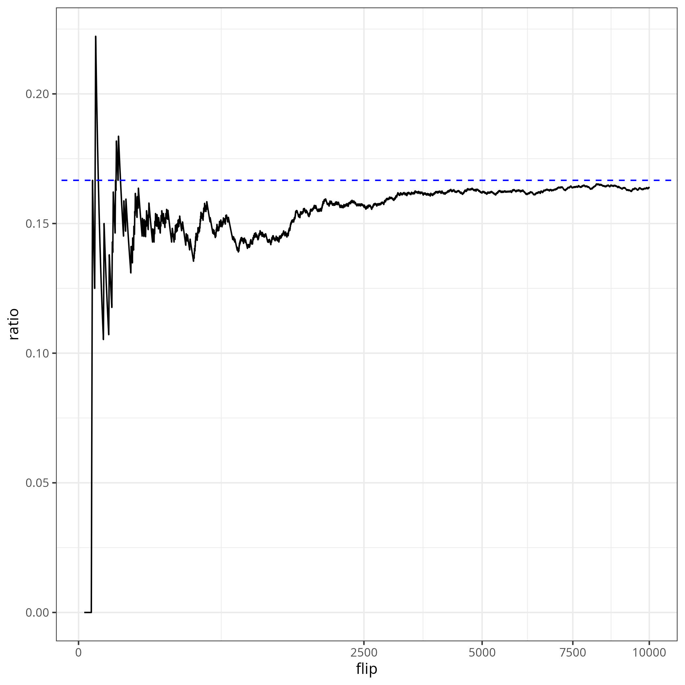

Cycle Analysis
Consider an infinitely long sequence of coin flips, i.e. with \(p\) probability heads and \(1-p\) probability tails. You get points for non-overlapping pairs of consecutive heads. How many points do you expect to obtain per flip? That is, what is the limit for the ratio of the number of points over number of flips?
For example, the sequence \(HHTHHH\) gets \(2\) points. With \(6\) flips, the average score is \(1/3\).
From a quick simulation with \(p=1/2\), (flips on the \(x\)-axis, on a square-root scale), it seems like the ratio converges to \(1/6\). Let us show that analytically.
Solution via Mutual Recursion
Consider a (sufficiently large) index \(n\) in our sequence. The quantity we want to find is the probability that the \(n\)-th coin flip gains one additional point.
There are three possible cases: - the \((n-1)\)-th flip was tails (state T) - the \((n-1)\)-th flip was heads, and did not gain a point (state H) - the \((n-1)\)-th flip was heads, and gained a point (state HH)
For \(n\) large, the probabilities are stationary, meaning that flipping one more coin does not change their probabilities. Of course, \(\pi_T\), probability of being in state \(T\), is \((1-p)\), the probability of flipping tails. Under the stationary distribution, we also have the relations
\[ \pi_H = p \pi_T + p \pi_{HH} = p(1-p) + p \pi_{HH} \qquad \pi_{HH} = p \pi_H \]
The first relation says that the \(H\) state can come from flipping heads from either the \(T\) or \(HH\) states. The second relation says that to get to the \(HH\) state, we must flip heads from the \(H\) state.
To solve this recurrence, we can unroll:
\[ \pi_H = p(1-p) + p^2 \pi_H \implies \pi_H = \frac{p}{1+p} \]
and therefore, \(\pi_{HH} = \frac{p^2}{1+p}\), the solution to our puzzle. For a fair coin (\(p = 0.5\)), then \(\pi_{HH} = \frac{1}{6}\).
Markov Chains
What we have just done is find the stationary distribution of the following Markov Chain:The arcs represent the state changes after a coin flip. We want to find to find the long-term probability of being in the \(HH\) state.
Let \(P(x, y)\) be the probability of transitioning between states \(x\) and \(y\) (zero if there is no arc). Then, a stationary distribution satisfies the recurrence
\[ \pi_y = \sum_x \pi_x P(x, y) \]
Towards a Generalization
In this problem, we gain points whenever we visit a state. It is straightforward to generalize to gaining points whenever we visit one of a set of states, by just adding the probabilities!
However, what if we want to gain points instead on an arc? For example, we can represent this three state markov chain instead using two states, where we get points on the top edge.As a computer scientist, I care about finite state Markov chains. For irreducible chains (i.e. corresponding to strongly connected digraphs), there is an alternative way of finding these probabilities.
Notation
Let us introduce some notation. - \(X_m\), the state of the markov chain after \(m\) steps - \(P^m(x,y)\) be the probability of moving from state \(x\) to \(y\) in exactly \(m\) steps. - \(N_n(x,y) = \sum_{m=1}^n 1_{y}(X_m)\), the number of visits to state \(y\) in \(n\) steps, starting at state \(x\). - \(G_n(x,y) = E(N_n(x,y)) = \sum_{m=1}^n P^m(x,y)\), the expected number of visits to \(y\) from \(x\) in \(n\) steps. - \(T_{x,y}^r = \min \{ n \ge 1 \mid N_n(x,y) \ge r \}\), the earliest time to hit \(y\) exactly \(r\) times - \(m_{x,y} = E(T_{x,y}^1)\), the expected time to hit \(y\) starting at state \(x\), i.e. the hitting time
For brevity, \(m_y = m_{y,y}, T_y = T_{y,y},\)…
Hitting Times and Stationary Distribution
Recall we want to find \(\pi_y\), the stationary distribution of the markov chain.
Theorem: The stationary distribution is the reciprocal of the hitting time.
\[ \pi_y = \frac{1}{m_y} = \lim_{n \to \infty} \frac{N_n(y)}{n} \]
proof: First, we show the second equality, that the ratio \(N_n(y, y) / n\) approaches \(1/m_{y}\). For \(i \ge 1\), we consider \(\omega^i = T_{y}^i - T_{y}^{i-1}\), the marginal time to cycle back to \(y\) for the \(i\)-th time. Since our transitions are memoryless, then \(\omega^i\) are iid. Now, by the law of large numbers,
\[ \frac{T_{y}^k}{k} = \frac{1}{k} \sum_{i=1}^k \omega^i \to E(\omega) = m_{y} \]
Finally,
\[ \frac{T_{y}^{N_n(y)}}{N_n(y)} \le \frac{n}{N_n(y)} \le \frac{T_y^{N_n(y) + 1}}{N_n(y) + 1} \]
where the left and right both converge to \(m_y\). Thus, \(\frac{n}{N_n(y)}\), and moreover \(\frac{n}{G_n(y)}\), both converge to \(m_y\) as well.
Now, for the first equality, note that for any \(m\), \(\pi_y = \sum_{x \in S} \pi(x) P^{m}(x,y)\). Therefore, when we sum over \(m\), we have
\[ \pi_y = \frac{1}{n} \sum_{m=1}^n \sum_{x \in S} \pi(x) P^m(x,y) = \sum_{x \in S} \pi(x) \frac{G_n(x,y)}{n} \]
Moreover, this holds as \(n \to \infty\), so recalling that \(\sum_x \pi(x) = 1\), then we find that
\[ \pi_y = \lim_{n \to \infty} \sum_{x \in S} \frac{G_n(x,y)}{n} \pi(x) = \sum_{x \in S} \pi(x) \frac{1}{m_y} = \frac{1}{m_y} \]
Thus concludes the proof.
Computing Hitting Times using Cycles
The hitting time \(m_y\) is the expected number of steps starting at \(y\) before reaching \(y\) again. We can compute this by enumerating all (possibly countable infinite) cycles, computing the probability of taking it, and find the expected length.
I illustrate this by example. Consider the following two state Markov chain with states \(T\) and \(H\). Let \(P(T, H) = p\), \(P(H, T) = q\), and self loops \(1-p\) and \(1-q\) respectively.To find the hitting time (and therefore, the stationary distribution) \(m_T\), then we have the following cycles: \(e_4\), \(e_1 e_3\), \(e_1 e_2 e_3\), \(e_1 e_2 e_2 e_3\), …
Therefore, we can find the average cycle length, i.e. the hitting time, as
\[ \begin{aligned} m_T & = p(e_4) \cdot 1 + p(e_1 e_3) \cdot 2 + p(e_1 e_2 e_3) \cdot 3 + p(e_1 e_2 e_2 e_3) \cdot 4 + \ldots \\ & = (1-p) + \sum_{\ell=0}^\infty (\ell + 2) pq (1-q)^\ell \\ & = (1-p) + 2pq + p(1-q) \sum_{\ell = 0}^\infty (\ell + 2) q(1-q)^{\ell - 1} \\ & = (1-p) + 2pq + p(1-q) (2 + 1/q) = \frac{p + q}{q} \end{aligned} \]
Thus, \(\pi_T = \frac{p}{p+q}\).
We can now find \(\pi_H\) in one of several ways. First, \(\pi_H + \pi_T = 1\), so that \(\pi_H = \frac{p}{p+q}\).
Alternatively, we can note that \(\pi_H / \pi_T\) is the averaged number of times we visit \(H\) in the above cycles. That is,
\[ \begin{aligned} \frac{\pi_H}{\pi_T} & = p(e_4) \cdot 0 + p(e_1 e_3) \cdot 1 + p(e_1 e_2 e_3) \cdot 2 + \ldots \\ & = \sum_{\ell=0}^\infty (\ell + 1) pq (1-q)^\ell \\ & = pq + p(1-q) \sum_{\ell = 0}^\infty (\ell + 1) q(1-q)^{\ell - 1} \\ & = pq + p(1-q) (1 + 1/q) = \frac{p}{q} \end{aligned} \]
so that indeed, \(\pi_H = \frac{p}{q} \frac{q}{p+q} = \frac{p}{p+q}\).
We can summarize this procedure into the following theorem:
Theorem: Let \(x\) be any state in a finite irreducible Markov chain, and \(C_x\) be all cycles from \(x\). Then, for any state \(y\),
\[ \pi_y = \frac{ \text{average visits to } y \text{ in } C_x }{ \text{average length of } C_x } \]
Note that here, we say cycles to allow repeated links, but passing through the start state exactly once.
proof: We partition the walk into stages, where each stage is delimited by a cycle in \(C_x\). Then, \(N_n(y)\) is sum of visits to \(y\) in the \(k\)-th stage.
\[ \frac{N_n(y)}{n} = \frac{N_n(y)}{G_n(x) m_x} = \frac{1}{m_x} \frac{N_n(x)}{G_n(x)} \frac{1}{N_n(x)} \sum_{k=1}^{N_n(x)} ( \text{visits to } y \text{ in } k \text{-th cycle} ) \]
Now, \(\frac{N_n(x)}{G_n(x)} \to 1\), and \(\frac{1}{N_n(x)} \sum_{k=1}^{N_n(x)} (..)\) approaches the average visits to \(y\) in \(C_x\). Moreover, the LHS approaches \(\pi_y\), and \(m_x\) is the average length of \(C_x\).
Thus, taking limits, indeed
\[ \pi_y = \frac{ \text{average visits to } y \text{ in } C_x }{ \text{average length of } C_x } \]
Points on Links
Let us return to our two-state Markov chain, where we get a point whenever taking the \(H \overset{H}{\to} S\) link.
In general, as we can bisect links into states, then for any start state \(x\),
\[ \text{average points} = \frac{ \text{average points in } C_x }{ \text{average length of } C_x } \]
Now, we have the cycles \(T\), \(HT\), and \(HH\) with probabilities \(1-p\), \(p(1-p)\), and \(p^2\) respectively. The average cycle length is \(1 \cdot (1-p) + 2 \cdot p(1-p) + 2 \cdot p^2 = 1 + p\). The average points per cycle is \(0 \cdot (1-p) + 0 \cdot p(1-p) + 1 \cdot p^2 = p^2\). Finally,
\[ \text{average points} = \frac{p^2}{1+p} \]
Indeed this is the same solution as via mutual recursion!
Concluding Remarks
Here, we discussed a probability question that could be represented by finding the stationary probability of an irreducible Markov chain. Then, we described an alternative approach that often leads to smaller Markov chains!
When the underlying digraph is not strongly connected, then this analysis does NOT work. In particular, the start state now matters.
Addressing this, we need to consider the probability of ending up at each of the strongly connected components. The general way of handling this is to represent each connected component as an absorbing state, with \(Q\) the new transition probability. Then, the probability of ending at state \(t\) is
\[ Q^0(s,t) + Q^1(s,t) + Q^2(s, t) + \ldots = (1-Q)^{-1}(s, t) \]
where \(\sum_{m=0}^\infty A^m = (1-A)^{-1}\) by Geometric series formula. \((1-Q)^{-1}\) is called the fundamental matrix.
Apparently, this is a special case of a renewal-reward process.
Acknowledgements
The cycle analysis technique was introduced to me by my friend taking CS 438 at UIUC. Many probablistic networking protocols exhibit simple irreducible behavior which lend themselves nicely to such analysis.